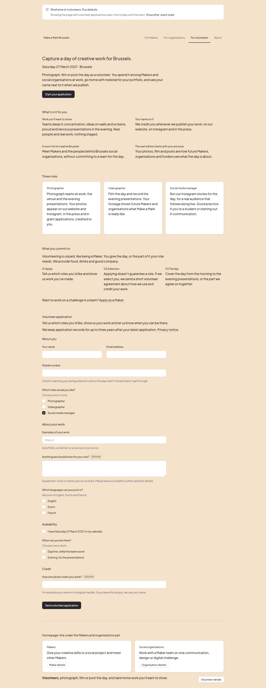
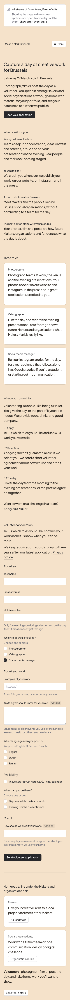

Round 2: volunteer applications are open from today and close after the event; the copy now leads with what volunteers get from the day. Content and structure of /volunteers and its form, using Flux defaults and no custom styling. In the build it gets the site's look, matching the Makers and organisations pages. It runs locally at /tools/wireframes/volunteers.


| Block | Content | Source |
|---|---|---|
| Hero | Headline (question A), date, intro: the day among Makers and organisations, portfolio material, your name when we publish. Open: "Start your application". After the event: "Volunteer applications are closed for 2027" + Instagram. | Your message: open from today, close after the event |
| What's in it for you (new) | Work you'll want to show · Your name on it · A room full of creative Brussels · The next edition starts with your pictures | Your message: copy needs the benefit |
| Three roles | Each card: what you do and what you get from it. Photographer: published and credited. Videographer: your footage shows future Makers what it's like. Social media: live content for a real audience, good practice for students. | V-02, V-03; the brief prefers students for social media |
| What you commit to | Unpaid, like Makers; "We provide food, drinks and good company" (question B). 01 Apply · 02 Selection + volunteer agreement · 03 The day. Then: "Want to work on a challenge in a team? Apply as a Maker." | V-07, sitemap C1 |
| Form: About you | Name, email, mobile (required, Maker hint), roles (one or more) | V-09, page 52 §2 |
| Form: About your work | Examples of your work (URL, required), notes for your role (optional, no sensitive details), languages: only when social media is chosen | Page 52 §2 |
| Form: Availability | Date in calendar (required), daytime and/or evening (at least one) | Page 52 §2 |
| Form: Credit | How to credit your work (optional; defaults to your name) | V-07 |
| Not on the form | Motivation, referral, themes, age, teams | Minimisation, owner: no themes, V-04, V-08 |
| Homepage | "Volunteers, photograph, film or post the day, and take home work you'll want to show." + Volunteer details | Sitemap A1 |
If photo and video are filled, the roles section shrinks to one card and the headline may change. Roles come from one catalogue, so a role can be hidden without changing the page.
Might add one line under "What you commit to". No form field (V-08: no age gate).
Settled by you: volunteers don't pick themes.